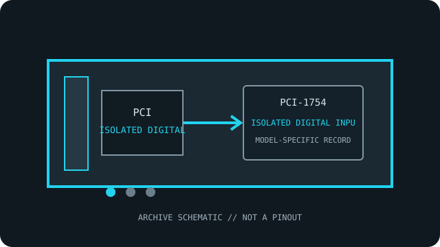

[ INDIVIDUAL COMPONENT // ISOLATED DIGITAL INPUT ]
Advantech PCI-1754
Sixty-four optically isolated digital inputs accept industrial DC signals in four grouped banks. This model-specific archival record separates published specifications from system-compatibility assumptions.

MODEL SCOPE: Advantech PCI-1754. Confirm exact board label, revision, connector/accessory, firmware and host slot before installation.
Reference specifications
| Exact model | Advantech PCI-1754 |
|---|---|
| Host bus / lanes | 32-bit PCI; conventional PCI, not PCI Express. PCIe lanes: not applicable; this is a PCI model. |
| Channels, ranges and resolution | 64 isolated digital inputs organized in four groups; specified input voltage range 10–50 VDC. Input current is approximately 9.4 mA at 50 VDC per published specifications. Digital input only; no analog resolution/range applies. |
| Isolation / safety rating | 2,500 VDC isolation specified by Advantech. This component withstand figure is not a CAT or working-voltage rating. |
| Operating system and API | Windows: Advantech DAQNavi / device-driver API family; the shared PCI-1752/1754/1756 user manual and exact model/OS driver matrix apply. |
| Compatibility notes | Confirm input polarity, group common and external field wiring. The PCI-1754 is an input-only SKU; do not confuse it with the output-only PCI-1752 or the mixed 1756. |
Compatibility, care & archival notes
- Verify the full model suffix and revision against the manufacturer's manual; similarly numbered variants can change I/O functions.
- Use a conventional PCI slot of supported voltage/keying; the card is not a PCIe x1/x4/x8/x16 device.
- Record driver version, OS bitness, connector accessories, wiring and calibration state alongside any installation.
Sources & further reading
- Advantech — PCI-1754 product specifications and technical downloadsManufacturer specifications and technical-download entry for the exact model; verify the board revision and document revision.
- Advantech — PCI-1752/1754/1756 User ManualManufacturer manual or datasheet source for installation, signal limits and programming; the model-specific guide governs exact compatibility.
- Advantech — DAQNavi Assistant VI User GuideManufacturer software/API reference; not a guarantee that a legacy board is supported by every current OS package.